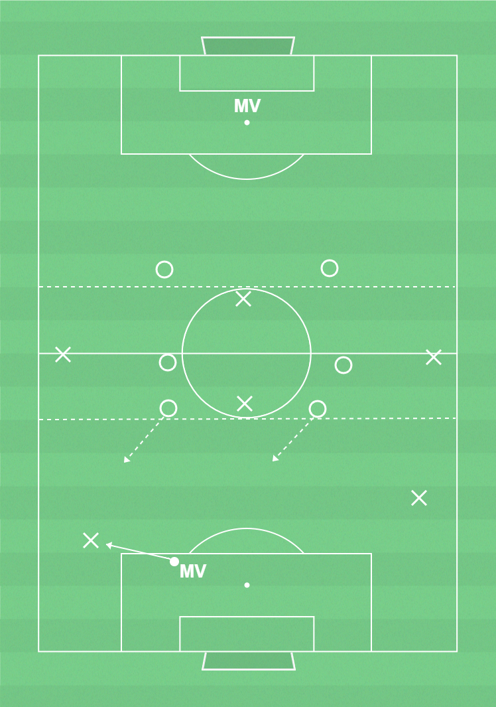

 ▶
▶
Komma till avslut och göra mål
Genom att samarbete och veta sina uppgifter när bollen närmar sig motståndarnas mål ökar chanserna för att göra mål.
Komma till avslut och göra mål:- Bollhållaren: Tex driva, utamana och passa passa för att ta sig framåt.- Medspelarna: Ta löpningar mot straffområdet.
Förhindra och rädda avslut:- Pressa bollhållaren åt ena kanten och flytta över laget.
Målvakter (FORA):- Snabba förflyttningar för att vara i position för att bryta djupledsspel, fånga inlägg och rädda avslut.
Ca 14 spelare, yta 50-55x30-35m (7 mot 7 plan), bollar, 2 färger västar, 2 mål
2 lag med 7 i varje. MV i lag 1 startar spelet. Lag 2 har två utespelare i varje 1/3 (spelarna i första 1/3 startar bakom retreatlinjen när MV har boll för att gå in i sin yta när bollen är i spel). Lag 2 får inte röra sig över tredjedelarna eller pressa bollhållare - däremot får de bryta passningar. Om lag 2 vinner bollen ska de försöka göra mål. Lag 1 får röra sig fritt i alla 1/3 och ska ta sig in i sista 1/3 för att komma till avslut och göra mål. Byt roller efter viss tid.